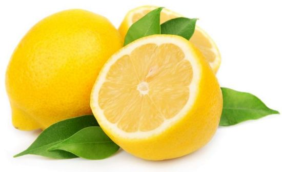

छोटे से नीबू में बडे औषधीय गुण ----------
_______________________________________________________
कोई भी मौसम हो, नींबू ऎसा फल है जो हर घर में हर समय मिलता है। यह केवल खाने का स्वाद ही नहीं बढाता बल्कि इसमें कई औषधीय व सौंदर्यवर्धक गुण भी मौजूद हैं। इसमें विटामिन-सी पर्याप्त मात्रा में होता है।
सौंदर्य निखार के लिए :
1. नारियल के तेल में नींबू का रस मिलाकर रात में सिर में हल्के हाथ से, एक हफ्ते तक रोजाना मालिश कर, सुबह सिर धोने से बालों की खुश्की दूर हो जाती है।
2. यदि मालिश न भी करें तो सिर धोने के पानी में दो नींबू निचोडकर एक हफ्ता लगातार प्रयोग करने से बाल मुलायम होते हैं, उनका झडना कम होता है और खुश्की या रूसी भी कम होती है।
3. नारियल के तेल में नींबू का रस और कपूर लगाकर सिर की मालिश करने से बालों के रोग खत्म हो जाते हैं।
4. सुबह स्नान करने से पहले नींबू के छिलकों को चेहरे पर धीरे-धीरे मलकर 2-3 मिनट बाद चेहरे को पानी से धो लें। इसे 10-15 दिन लगातार करने से चेहरे का रंग साफ हो जाता है। यह बाजार में मिलने वाले किसी भी ब्लीचिंग क्रीम या ब्यूटी पार्लर में कराए जाने वाले ब्लीच का काम करेगा।
5. नींबू का रस और गुलाबजल समान मात्रा में मिलाकर चेहरे पर लगाएं, कुछ दिनों के लगातार प्रयोग से चेहरा बेदाग,त्वचा कोमल व स्वच्छ हो जाती है।
6. नींबू और तुलसी की पत्तियों का रस समान मात्रा में मिलाकर किसी कांच के बर्तन में रख लें और दिन में कम से कम दो बार हल्के हाथ से चेहरे पर लगाएं। कुछ दिन के लगातार इस्तेमाल से चेहरे पर झाइयां व किसी भी प्रकार के निशान मिट जाते हैं।
7. चेहरा जल जाने पर यदि चेहरे पर काले दाग पड गए हों तो एक टमाटर के गूदे में नींबू के रस की कुछ बूंदें मिलाकर सुबह-शाम लगाएं और थोडी देर बाद धो लें।
औषधि के रूप में
1. बदहजमी होने पर नींबू काटकर उसकी फांक या छोटे टुकडे में काला नमक लगाकर चूसने से आराम आता है।
2. जिनको भूख कम लगती है और पेट दर्द की शिकायत रहती है उनको नींबू की फांक में काला या सेंधा नमक लगाकर उसको तवे पर गर्म करके चूसने से न केवल दर्द में आराम मिलता है बल्कि भूख भी खुलकर लगती है।
3. यदि चक्कर आ रहे हों या उल्टी आ रही हों तो नींबू के टुकडे पर काला नमक, काली मिर्च लगाकर खाने से चक्कर आने बंद हो जाते हैं और उल्टी भी बंद हो जाती है।
4. एक गिलास पानी में एक नींबू का रस निचोडकर एक चम्मच चीनी पीसकर मिलाकर पीने से हैजे जैसा रोग भी ठीक हो जाता है।